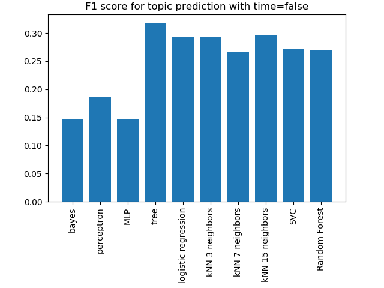
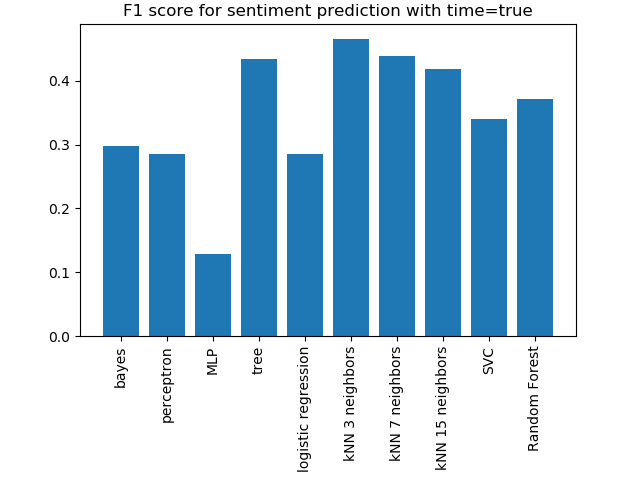
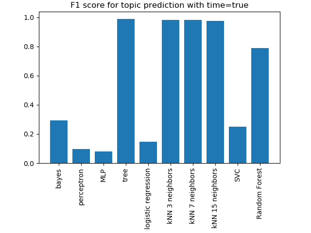

Let's take a look without taking into account the date of the tweets:


For the sentiment prediction, the best model is the kNN 7 neighbors with a F1 score of 0.459 without the time column in input. About the topic prediction, the best classifier is the tree but with a F1 score of 0.317. What is the difference with the results taking into account the date?

The best classifier for the sentiment prediction is the kNN 3 neighbors with a F1 score of 0.466 and for topic prediction, the best classifier is the tree with a F1 score of 0.99.
The results can be find into the tables below:
First table is without taking into account the date of tweets:
| Model | Accuracy sentiment | F1_score sentiment | Accuracy topic | F1_score topic |
|---|
| Bayes | 0.455 | 0.285 | 0.310 | 0.147 |
|---|
| Percepton | 0.314 | 0.288 | 0.310 | 0.186 |
|---|
| Multi-layer Perceptron | 0.442 | 0.370 | 0.310 | 0.147 |
|---|
| Tree | 0.346 | 0.344 | 0.320 | 0.317 |
|---|
| logistic Regression | 0.455 | 0.285 | 0.412 | 0.294 |
|---|
| kNN 3 neighbors | 0.382 | 0.376 | 0.320 | 0.293 |
|---|
| kNN 7 neighbors | 0.469 | 0.459 | 0.290 | 0.267 |
|---|
| kNN 15 neighbors | 0.469 | 0.453 | 0.320 | 0.297 |
|---|
| SVC | 0.455 | 0.404 | 0.383 | 0.273 |
|---|
| Random Forest | 0.462 | 0.367 | 0.379 | 0.271 |
|---|
The second one take into account the date of tweets:
| Model | Accuracy sentiment | F1_score sentiment | Accuracy topic | F1_score topic |
|---|
| Bayes | 0.459 | 0.297 | 0.409 | 0.292 |
|---|
| Percepton | 0.455 | 0.285 | 0.244 | 0.096 |
|---|
| Multi-layer Perceptron | 0.287 | 0.128 | 0.221 | 0.080 |
|---|
| Tree | 0.426 | 0.435 | 0.990 | 0.990 |
|---|
| logistic Regression | 0.455 | 0.285 | 0.310 | 0.147 |
|---|
| kNN 3 neighbors | 0.475 | 0.466 | 0.983 | 0.983 |
|---|
| kNN 7 neighbors | 0.452 | 0.439 | 0.983 | 0.983 |
|---|
| kNN 15 neighbors | 0.442 | 0.419 | 0.977 | 0.977 |
|---|
| SVC | 0.469 | 0.341 | 0.363 | 0.251 |
|---|
| Random Forest | 0.469 | 0.372 | 0.792 | 0.791 |
|---|
As you can see, the time column is very important for the topic prediction. In fact, most tweets about the same topic have been collected in short amount of time. This explains the important influence of this column on the topic prediction. The graphic below shows this phenomenon: